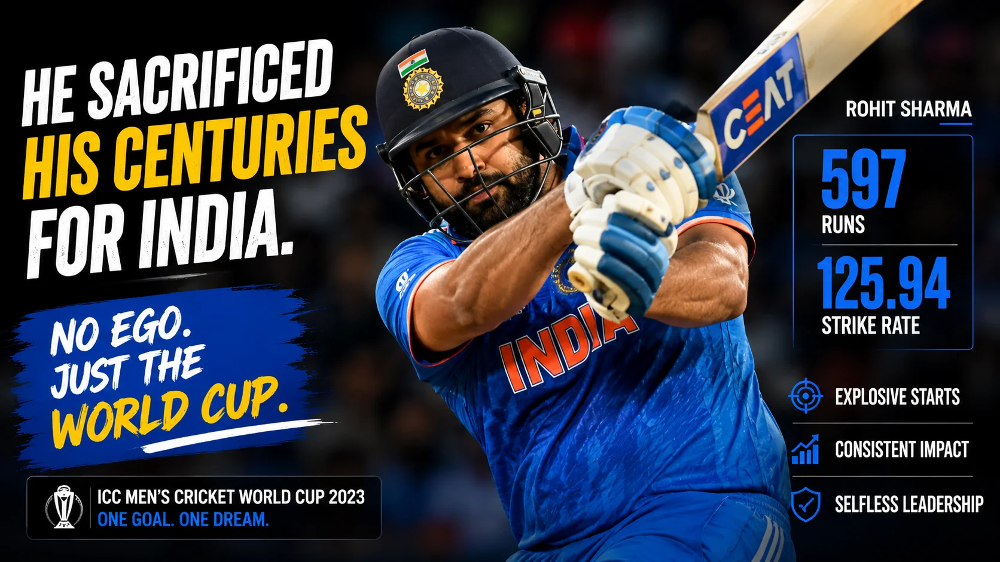
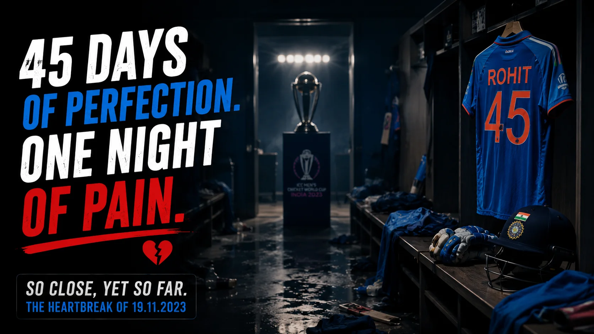

The Silence of 1,30,000 People
November 19, 2023. The Narendra Modi Stadium in Ahmedabad was supposed to be the venue for the biggest party in Indian cricket history. 1,30,000 people wearing blue jerseys had gathered to watch India lift the World Cup after 12 years. Instead, they witnessed a silence so profound, it felt suffocating.
When Glenn Maxwell hit the winning runs for Australia, the camera immediately panned to the Indian captain. Rohit Sharma did not collapse on the field. He did not scream. He simply shook hands with the Australian players, forced a small smile, and started a long, agonizing walk back to the dressing room.
It was on those stairs, away from the glaring floodlights, that the mask finally slipped. The man who had carried the dreams of a billion people on his broad shoulders could no longer hold back the tears.

The Selfless Captain
To understand the depth of Rohit Sharma's heartbreak, you have to understand how he played those 45 days. In a country obsessed with milestones, centuries, and individual records, Rohit decided to play a brand of cricket that was completely alien to Indian fans.
He became the ultimate sacrificial lamb. Match after match, he walked out and swung his bat with reckless abandon. He scored 47 against Australia, 86 against Pakistan, 48 against Bangladesh, and 40 against South Africa. He constantly threw away his wicket in the 30s and 40s, giving India explosive starts that crippled the opposition in the first 10 overs.
Rohit Sharma scored 597 runs in the 2023 World Cup at a strike rate of 125.94. No other player in history has scored 500+ runs in a World Cup with a strike rate above 120.
He didn't care about his own hundreds. He only cared about the Cup. He had changed his entire DNA as a batter for this one tournament. And it worked beautifully for 10 straight matches. India looked invincible. Until that fateful Sunday in Ahmedabad.
The Dressing Room Breakdown
What happened in the dressing room after the match is a story that still gives chills to anyone who was present. The doors were shut. The media was kept far away. Inside, it was like a graveyard.
"He had given everything. Emotionally, physically, tactically. When he came into the dressing room, he just broke down. It was tough to see a guy who had been so strong for us, completely shattered."Inside source from the dressing room
Head Coach Rahul Dravid, who himself had suffered a massive World Cup heartbreak as captain in 2007, stood up to speak. But words felt hollow. Several players, including Virat Kohli and Mohammed Siraj, were in tears. But seeing Rohit cry was different. Rohit is known as the relaxed, humorous, easy-going leader. Seeing him weep uncontrollably broke whatever resolve the team had left.

The Burden of Leadership
The tragedy of the 2023 World Cup final was that India didn't play badly; they were simply out-tacticked on a sluggish pitch by a brilliant Australian side led by Pat Cummins. But as the captain, Rohit blamed himself.
He had started brilliantly in the final too, scoring a rapid 47 off 31 balls. But his dismissal, caught brilliantly by Travis Head while trying to hit another boundary, was the turning point. Many critics later argued he should have played conservatively. But conservative cricket is exactly what lost India previous tournaments.
Rohit had chosen to live by the sword. He died by the sword. He refused to blame the pitch, the toss, or luck. He took the entire burden of the loss upon himself. That is what true leaders do.
Losing the Cup, Winning Hearts
Rohit Sharma did not lift the gold trophy that night. But something incredible happened over the next few weeks. The Indian public, notoriously unforgiving when it comes to World Cup failures, did not burn effigies. They did not protest.
Instead, social media was flooded with messages of love and gratitude for Rohit Sharma. The nation recognized that they had witnessed the most selfless brand of cricket ever played by an Indian captain. He had united a billion people for a month and half. He had made them believe.
The tears in the dressing room eventually dried. Rohit would return, and he would eventually conquer the world in the T20 format in 2024. But the heartbreak of November 19, 2023, remains a poignant chapter in his legacy. A reminder that sometimes, you can do absolutely everything right, play perfectly for 45 days, be entirely selfless, and still lose. That is the cruelty, and the beauty, of cricket.
📷 Image Credits: Images via ICC/BCCI
Frequently Asked Questions
How many runs did Rohit Sharma score in the 2023 World Cup?
Rohit Sharma scored a phenomenal 597 runs in 11 matches at a strike rate of 125.94, becoming the first captain to score 500+ runs in a single World Cup edition while maintaining such an explosive strike rate.
Did Rohit Sharma cry after the 2023 World Cup final?
Yes. While leaving the field, Rohit Sharma was seen hiding his tears as he walked up the stairs to the dressing room. Rahul Dravid later confirmed that the dressing room atmosphere was heavily emotional and many players, including Rohit, broke down.
What was Rohit Sharma's strategy in the 2023 World Cup?
Rohit adopted a completely selfless strategy. Instead of playing for personal milestones, he attacked the bowlers in the first 10 overs (Powerplay) to give India massive starts, making it easier for players like Virat Kohli and Shreyas Iyer to settle down.
Who won the Player of the Tournament in the 2023 World Cup?
Virat Kohli won the Player of the Tournament award for scoring 765 runs, the most by any batter in a single edition of the Cricket World Cup.